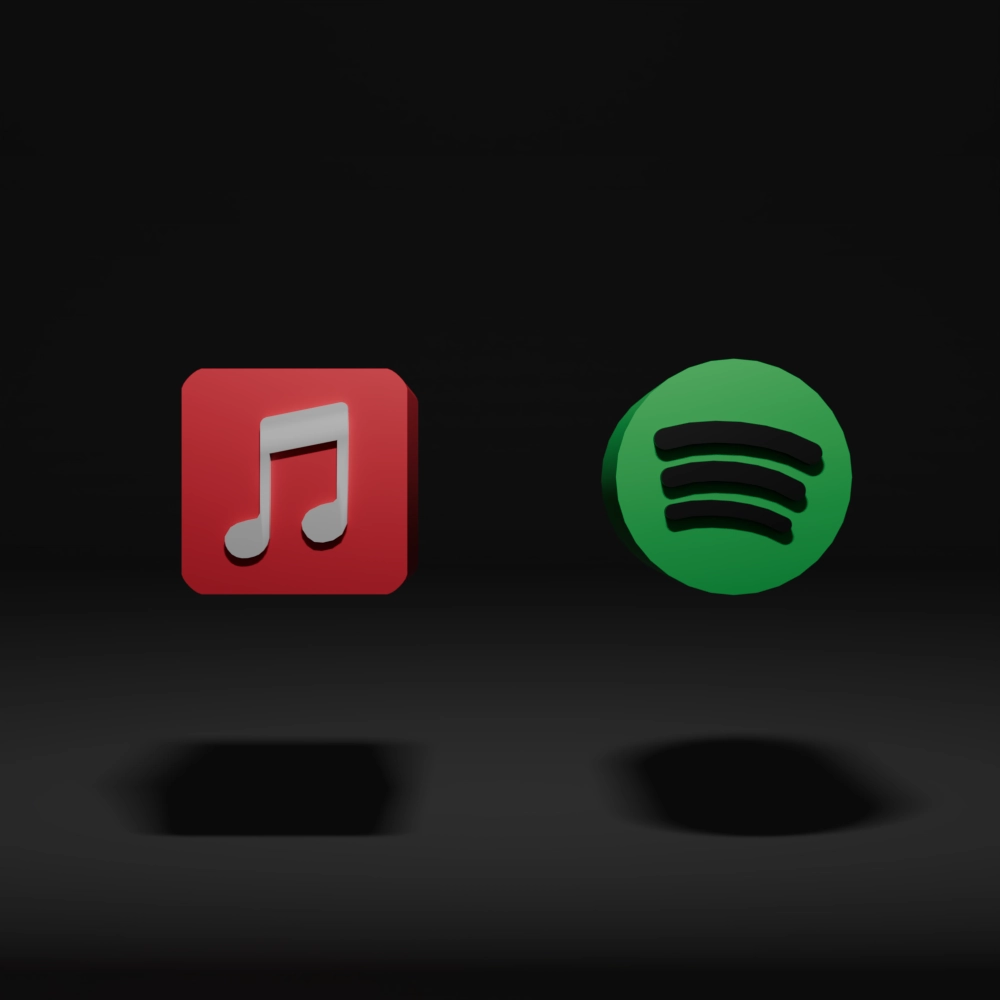

Subscription

音楽サブスクは、月額制で数千万曲以上の音楽をいつでも・どこでも聴き放題にできるサービスです。スマートフォンやPCでストリーミング再生が可能で、 オフライン再生にも対応しており、通信環境を気にせず楽しめます。ジャンル別や気分別のプレイリスト、レコメンド機能などにより、新しい音楽との出会いが生まれやすいのも魅力です。 また、CDやデータの管理が不要で、手軽かつ省スペースで音楽を楽しめる現代的なスタイルとして、幅広い世代に支持されています。
Apple Musicは高音質・Apple製品との連携の良さが魅力で、ライブラリ統合や空間オーディオにも対応しています。 一方、Spotifyはプレイリストやレコメンド機能が優れており、無料プランでも利用可能なのが強みです。 どちらも豊富な楽曲数を誇りますが、Appleは音質とAppleユーザー向けの最適化、Spotifyは発見と気軽さに特化している点が主な違いです。